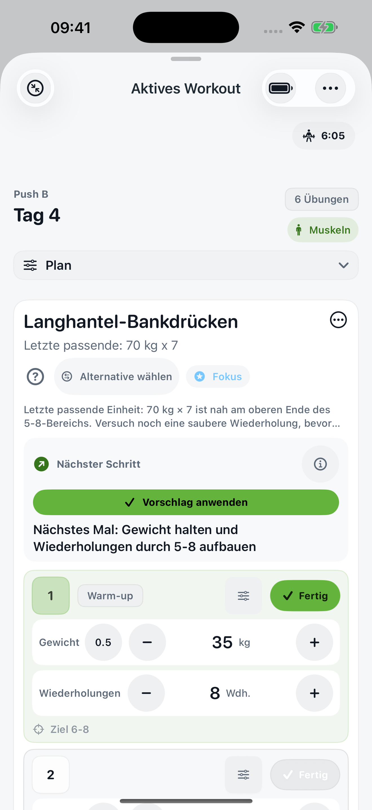
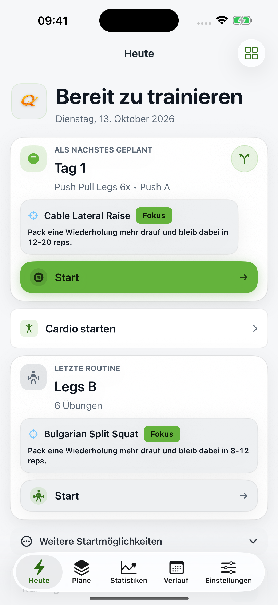
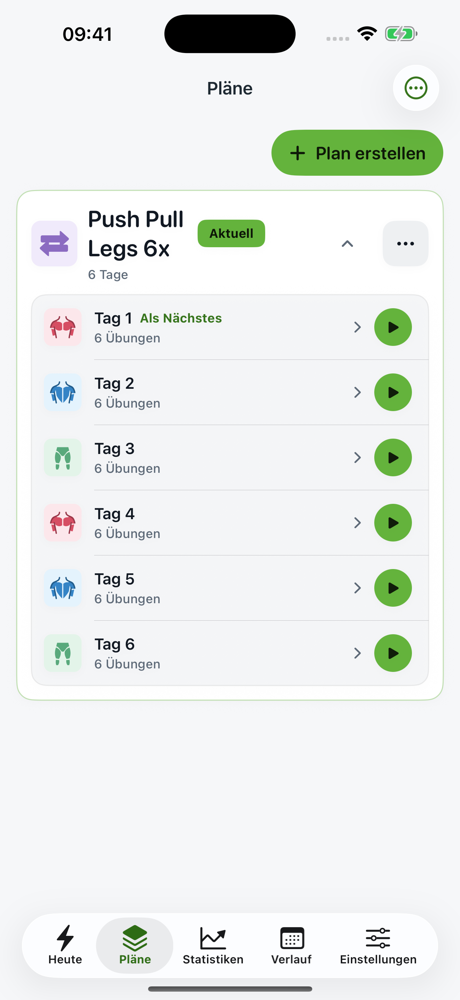

Starte mit deinem Plan.
Wähle einen Startplan oder erstelle deine eigene Routine. Dein nächstes Workout ist direkt erreichbar.
Für dein nächstes starkes Training
Logge Gewicht und Wiederholungen, sieh deine letzte Leistung und geh mit einem klaren Ziel in den nächsten Satz. Dein Trainingstagebuch für iPhone und Apple Watch.
Kein Konto · Keine Werbung · Deutsch & Englisch

Einfach im Training
Wähle einen Startplan oder erstelle deine eigene Routine. Dein nächstes Workout ist direkt erreichbar.
Gewicht, Wiederholungen und vorherige Leistung gehören zusammen. Der Pausentimer hält deine Einheit im Takt.
Sieh deine Einheiten im Verlauf, vergleiche deine Leistung und erkenne neue persönliche Bestleistungen.


QuickLift auf dem iPhone · Ansichten mit Beispieldaten
Logge Kraftsätze auf der Apple Watch und zeichne Cardio mit den von dir freigegebenen Gesundheitsdaten auf.
Importiere unterstützte Strong-CSV-Exporte. Prüfe die Vorschau, bevor du deine Trainingshistorie übernimmst.
Strong-Verlauf importieren →Lokale Speicherung, Export und vollständige Backups. Apple Health und iCloud-Backup aktivierst du selbst.
Für deinen Fortschritt
QuickLift ist jetzt im App Store erhältlich. Das folgende Premium-Angebot ist für ein späteres Update geplant und noch nicht aktiv.
0 €
Die Basis für jedes Workout.
4,99 € / Monat
oder 29,99 € / Jahr
Mehr Planung. Mehr Einblick.
Geplant: 7 Tage kostenlos im Jahresabo für berechtigte Kundinnen und Kunden, danach 29,99 € pro Jahr. Das Monatsabo hat keine Testphase. Automatische Verlängerung bis zur Kündigung. Preise gelten für Deutschland; verbindlich ist das Angebot in der App.
Nein. Deine Workouts werden lokal gespeichert. Du entscheidest, ob du Apple Health oder iCloud-Backup nutzen möchtest.
Noch nicht. Der App-Store-Download ist jetzt verfügbar; das hier beschriebene Abo und die jährliche Testphase sind für ein späteres Update geplant. Es wird über diese Website nichts gekauft.
Wer QuickLift vor Einführung der Abos bereits nutzt, erhält dauerhaft Premium. Das neue Abo-Angebot ist für neue Nutzerinnen und Nutzer nach Einführung vorgesehen.
Nach dem geplanten Premium-Start bleiben deine gespeicherten Workouts und Pläne erhalten. Premium-Funktionen enden mit dem bezahlten Zeitraum; grundlegendes Logging und Verlauf bleiben verfügbar.
Ja. QuickLift unterstützt Deutsch und Englisch, kg oder lb sowie Kilometer oder Meilen.
Erstelle in den Einstellungen ein vollständiges JSON-Backup. Optional kannst du iCloud für Backup und Wiederherstellung nutzen. Das ist keine laufende Synchronisation mehrerer Geräte.
Dein erster Satz beginnt mit einem klaren Plan.
Im App Store laden